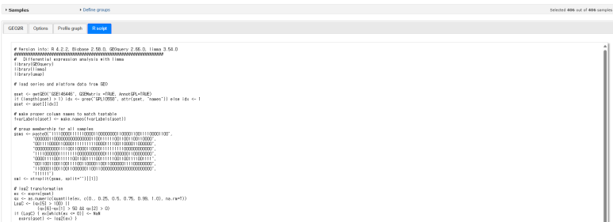

R script 확인

GEO2R의 R script 탭에는 데이터 다운로드, 그룹 벡터, design matrix, limma와 plot 코드가 포함됩니다.
복사 후 반드시 확인할 부분
- GSE와 GPL accession
- 선택된 GSM과 그룹 벡터
- Test와 Control의 contrast 방향
- log2 transformation과 normalization
- annotation 열과 gene symbol
- P-value 보정 방법
주의: 자동 생성된 코드를 그대로 신뢰하지 말고 metadata와 design이 연구 질문을 표현하는지 확인합니다.
웹 분석과 R 분석의 역할
| GEO2R | RStudio |
|---|---|
| 후보 데이터의 빠른 탐색 | 분석조건을 명시하고 재현 |
| 기본 plot과 DEG 확인 | 공변량·paired design 반영 |
| 즉시 결과 다운로드 | custom heatmap·volcano·보고서 |
저장할 분석 기록
dataset: GSE accession
platform: GPL accession
comparison: Test - Control
included_samples: GSM list
analysis_date: YYYY-MM-DD
GEO2R_options: log2 / normalization / FDR
R_session: sessionInfo()